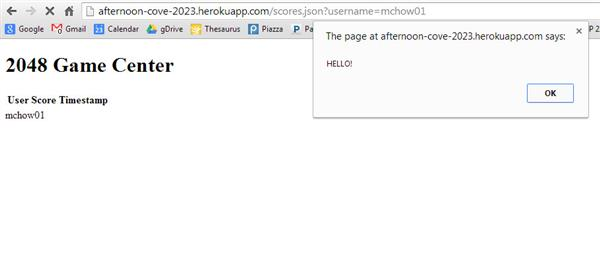
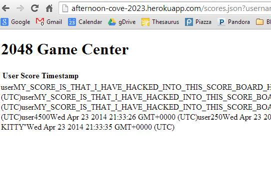
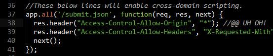
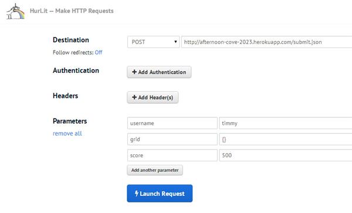
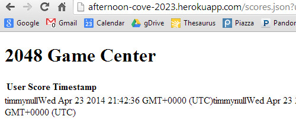
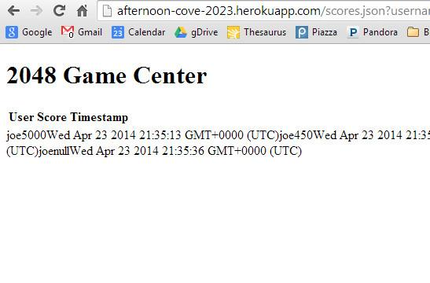
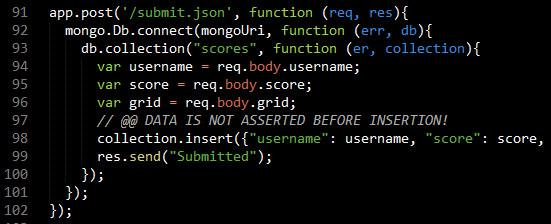

Performed April 2014 by Brian Pilchik of Tufts University.
For this assessment, I reviewed the 2048 Game Center product created by Nitesh Gupta in Tufts University's COMP 20 class. The product is described by its original specifications as "a web application that maintains final scores and grids for all your (and perhaps for other players') 2048 games for a long period of time" using Heroku, Node.js, Express, and MongoDB. I was asked to identify vulnerabilities in the product and propose resolutions.
I began with black-box testing against the live app running on Heroku. Here, I used Hurl (an online version of curl) to interact with the web app. I then requested the source code from Nitesh and attempted to find additional vulnerabilities there (white-box testing).
The largest security vulnerabilities, of course, come from trusting user input. This product is susceptible to malicious users running their own code on the product, since the product does not check to make sure user input is safe. User input can also overload the database by sending too much data, since the product does not limit the size of data sent. Beyond that, there is a danger that unintended users can communicate with the product remotely. It is also worth noting a smaller flaw in this product: the product accepts data from clients, even if the data is missing parts. Each of these vulnerabilities, however, can be resolved.
Location: Vulnerability in POST API, Affects GET API
Severity: HIGH
Description: Data submitted to the server via the POST API is not sanitized before being added to the database. If a malicious user injects script into the POST command, that script will be stored in the database and later run for clients via the GET API.
For example, if we Hurl username=mchow, score=<iframe width="420" height="315" src="//www.youtube.com/embed/dQw4w9WgXcQ?autoplay=1" frameborder="0" allowfullscreen></iframe>, grid={} as a POST request to the server, we can insert an iFrame into the results table for username=mchow.
Or, we could take a page out of Ming Chow's book and drop the same redirect code he used against his students onto the page with a simple score=<script>window.location='https://www.youtube.com';</script>, directing users away from the page entirely.
And, of course, we can do more than mess with the HTML. JavaScript will run in this way, as evidenced by Hurling score=<script>alert("HELLO!");</script>.

Allowing JavaScript to run is extremely dangerous, opening up nearly limitless varieties of malicious results for clients relying on the API.
Resolution: To prevent scripts from being sent to the database through the POST API, we need to sanitize the input coming in from the client. For this solution, we run the input strings (username, score, and grid) through a whitelist of permissible characters, removing all other characters: e.g. username.replace(/[^a-z0-9{}[],:\"\s]/gi, ''). To be a little nicer to the client, we could escape the characters instead, converting angle brackets to their harmless HTML equivalents, but it seems to me unlikely that the user needs to use special characters for the purposes of transmitting a username in the Game Center context.
Location: Server-Wide
Severity: MEDIUM
Description: Entering data into the database is simply a matter of using the POST API, and it works no matter who you are or where you're posting from. This means that anyone can POST data to the server, allowing for the creation of fabricated scores from unintended users (this flaw was exploited live in Ming Chow's COMP 20 class while he was first attempting to demonstrate a working version of the product). What's worse, anyone posting to a scoreboard can add any information they like; spammers can start posting links to commercial products in their "scores", and so on. Sure enough, a quick look inside the product's code reveals the line res.header("Access-Control-Allow-Origin", "*");, which enables Cross-Origin Resource Sharing (CORS) universally. This means that anyone can send data to the server.


Resolution: To resolve, some kind of unique identification (an API key) should be issued to developers as part of using the API, so that only that developer can modify the high score boards for the projects he or she is working on. Ming Chow suggests using the withCredentials property on XMLHttpRequest (a cookie) for authentication. It may also be useful to examine the data sent to the server to see whether or not it is the type of data expected (but this is better addressed through Issue #1 and Issue #3).
Location: POST API
Severity: MEDIUM
Description: A client using the API can POST data of unlimited length, capped only by MongoDB's 16mb/document cap (not to mention the storage limit on the free Mongo lab for Heroku). This means that malicious (or well-meaning but foolish) users can enter long enough user names, for example, to break the formatting of the high scores (forcing data onto a second line, for instance). More concerning, a client could potentially send many megabytes of data to the database, which exceeds the limit set by MongoDB. It is unclear what would happens under such a circumstance, but precautions should be taken. Thinking in even bigger-picture terms, even if smaller data (say, 10mb) is sent in every POST, this will still begin to fill up the space on the server very quickly, and many large entries could slow down the database operations used to search through the documents.
In my testing, I attempted to send a 30mb text file to the server for the "score" parameter. In response, "null" was listed as the score in my entry. But thereafter, all future POSTs to the server contained null scores... even legitimate data! That seems to break Mongo.

Attempts to send regular POSTs now result in null scores:

Resolution: We want to end the connection if too much data is being sent to the server. One contributor on Stack Overflow suggests using if (body.length > 1e6) { request.connection.destroy(); } in order to avoid a "flood attack" against the server (or in the case of a faulty client). Returning a 413 error (request entity too large) is also appropriate here.
Location: POST API
Severity: LOW
Description: Although not a serious vulnerability, I noticed in black-box testing (and confirmed by reviewing the code) that at no point does the web app check to see that POSTed data contains all three required fields (username, score, grid). As such, entries can be made to the database which lack one or more of these fields, resulting in "null" entries. I have not yet found a way to exploit the "null" values to cause further damage, but clients who rely on values in each entry could run into crashes or errors given that the returned data is not guaranteed to contain non-null values.


Resolution: To resolve, simply assert that the three parameters expected from the client are non-null before adding anything to the database: if(req.body.username && req.body.score && req.body.grid) { var username = req.body.username; //...and so on.
The product was secure against the following attempted attacks:
Current vulnerabilities with this product make it too insecure to release in its current form. However, the resolutions described above can quickly and easily resolve these problems, which should make this product much more secure. (I can hardly suggest a cost for implementing these solutions, seeing as I have already provided the solutions above.) This analysis, however, cannot guarantee that all vulnerabilities have been identified, and resolving the aforementioned problems does not mean the product is ready to launch. Further evaluation is suggested, perhaps by the computer and website experts at ABC Innovations.